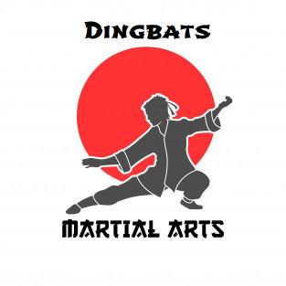

The Origins of Martial Arts in the UK
Jujutsu Arrives
On the 26th of September 1899 a British engineer, called Barton Wright,
returned to England after an extended period of living and working in Japan.
He brought with him an eighteen year old Japanese man whom he had
developed a friendship with, and who he believed had something special
to give to the British people. The Japanese youth was Yukio Tani (1881 - 1950)
and he was an exponent of the Japanese art of Jujutsu.
The combination ofBarton Wright, as entrepreneur /manager and
Yukio Tani, a natural showman, led the two men into touring the
Music Hall circuit, where Tani would challenge anyone willing
to wrestle with him. With the temptation of winning £1 for
lasting each minute, overan initial 5 minutes, or £50 for winning,
there was never a shortage of challengers. However, at a diminutive
5 feet 6 inches (1.67Mts) Tani allegedly lost only one music hall
match and that was to a fellow Japanese national.
An extract from an article on
streetdirectory.com
Quiet time in the Dojo
The Origins of Martial Arts in the UK (continued...)
Kenshiro Abbe and Kyu Shin Do
In 1955 and as a result of the LJS decision, a man, who's credentials were
incredible by Japanese standards let alone British ones, arrived in Britain.
The man was Kenshiro Abbe (1915 - 1985) and he was single handedly to have
more of an impact on British Martial Arts than anyone who had gone before
or, for that matter, after.
Abbe Sensei was born in Tokushima province, Japan and was first introduced to
Martial Arts by his father, a Kendo teacher,at the age of 3.
Abbe Sensei learnt Sumo wrestling at school and became the regional
school champion. In 1931 Abbe Sensei began Judo and one year
later, when only 15 years old, was graded 2nd Dan. His Judo prowess
grew from there, becoming the Tokushima High schools champion at 16 and
receiving his 3rd Dan from the national Martial Arts governing body, the Butokukai.
An extract from an article on
streetdirectory.com
Sensei's
These are some of the teachers you wish we had...
Carlos Ray "Chuck" Norris
is an American martial artist, actor, film producer, and screenwriter.
He is a black belt in Tang Soo Do, Brazilian jiu jitsu and judo.
After serving in the United States Air Force, Norris won many martial arts championships and
later founded his own discipline Chun Kuk Do.
The style was formally founded in 1990 as Chun Kuk Do by Chuck Norris, and was originally based on Norris' Tang Soo Do training in Korea while he was in the military.
During his competitive fighting career, Norris began to evolve the style to make
it more effective and well-rounded by studying other systems such as
Shōtōkan, Gōjū-ryū, Shitō-ryū, American Kenpo, Enshinkaikan, Kyokushin, Judo,
Brazilian Jiu-Jitsu, Arnis, Tae Kwon Do, Tang Soo Do and Hapkido.
Chun Kuk Do now emphasizes self defense, competition, weapons, grappling, and fitness,
among other things.
Each summer the United Fighting Arts Federation (UFAF) holds a training conference
and the Chun Kuk Do world championship tournament in Las Vegas, Nevada.
Chan Kong-sang SBS MBE PMW
known professionally as Jackie Chan, is a Hong Kong actor and
martial artist known for his slapstick acrobatic fighting style,
comic timing, and innovative stunts, which he typically performs himself.
He has trained in Wushu and Hapkido and has been acting since the 1960s,
performing in more than 150 films. He is one of the most popular
action film stars of all time.
Chan is one of the most recognizable and influential cinematic personalities
in the world, gaining a widespread global following in both the
Eastern and Western hemispheres, and has received stars on the
Hong Kong Avenue of Stars and the Hollywood Walk of Fame.
He has been referenced in various pop songs, cartoons, and video games.
He is an operatically trained vocalist and is also a Cantopop and Mandopop star,
having released a number of albums and sung many of the theme songs for the films
in which he has starred. He is also a globally known philanthropist
and has been named as one of the top 10 most charitable celebrities by Forbes magazine.
Li Lianjie
better known by his stage name Jet Li, is a Chinese-born Singaporean film actor,
film producer, martial artist, and retired Wushu champion who was born
in Beijing. After three years of training with acclaimed Wushu teacher
Wu Bin, Li won his first national championship for the Beijing Wushu Team.
"My winning first place caused quite a sensation because I was so young.
I was 12 years old, and the other two medalists were in their mid- to late twenties.
During the awards ceremony, as I stood on the top step of the podium, I was still shorter
than the 2nd and 3rd place medalists. It must have been quite a sight."
Donnie Yen Ji-dan
is a Hong Kong Chinese actor, martial artist, film director, producer, action choreographer,
stuntman, and multiple-time world wushu tournament champion.
Yen is one of Hong Kong's top action stars.
Yen is one of Hong Kong's top action stars. Yen is widely credited for bringing mixed
martial arts (MMA) into the mainstream Asian cinema by choreographing MMA
in many of his films since the early 2000s.
Yen has displayed skill in an array of martial arts, being well-versed
in Tai Chi, Boxing, Kickboxing, Jeet Kune Do, Hapkido, Taekwondo, Karate, Muay Thai,
Wrestling, Brazilian Jiu-Jitsu, Judo, Wing Chun, and Wushu.
One of the most popular film stars in Asia of the early 2000s, Yen is consistently
one of the highest-paid actors in Asia.
Our Teacher
Unfortunately this is what we have !
Seely Prattus is a self-proclaimed 19th Dan in TaekwoMadeUpushu and has been
practising diligently for a few hours. Never one to pass by an opportunity he took control
of our Dojo after the sad passing of his grandfather who, unfortunately, died whilst
practising the rarely used plastic light sabre swinging move. He impaled himself when tripping over
a poorly fitted crash mat.
Born in the 1960's his mother is said to have been the one screaming in the hospital delivery room
when she first laid eyes on her new born son. From there Seely's fame went from strength to
obscurity in a matter of moments.
Location
We are located in the
Deakin Centre
at
Addenbrookes Hospital, Cambridge. UK.
Our students are well known there and we never have any problems getting medical attention
when needed.
Addenbrookes Hospital
Deakin Centre
Hills Road
Cambridge
CB2 0QQ
Cambridgeshire
United Kingdom